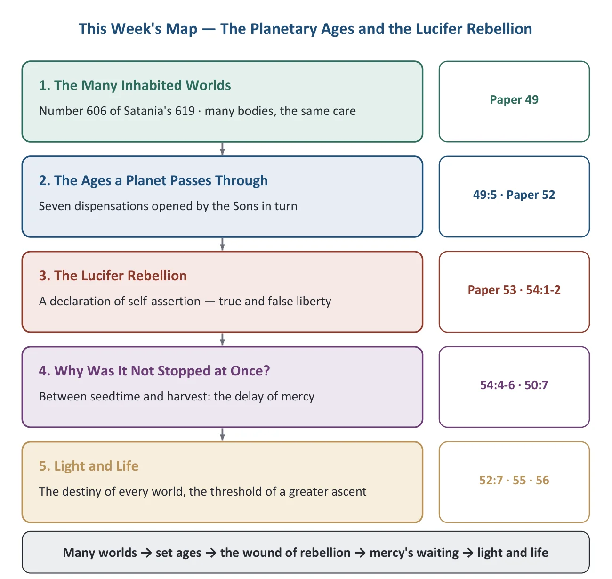
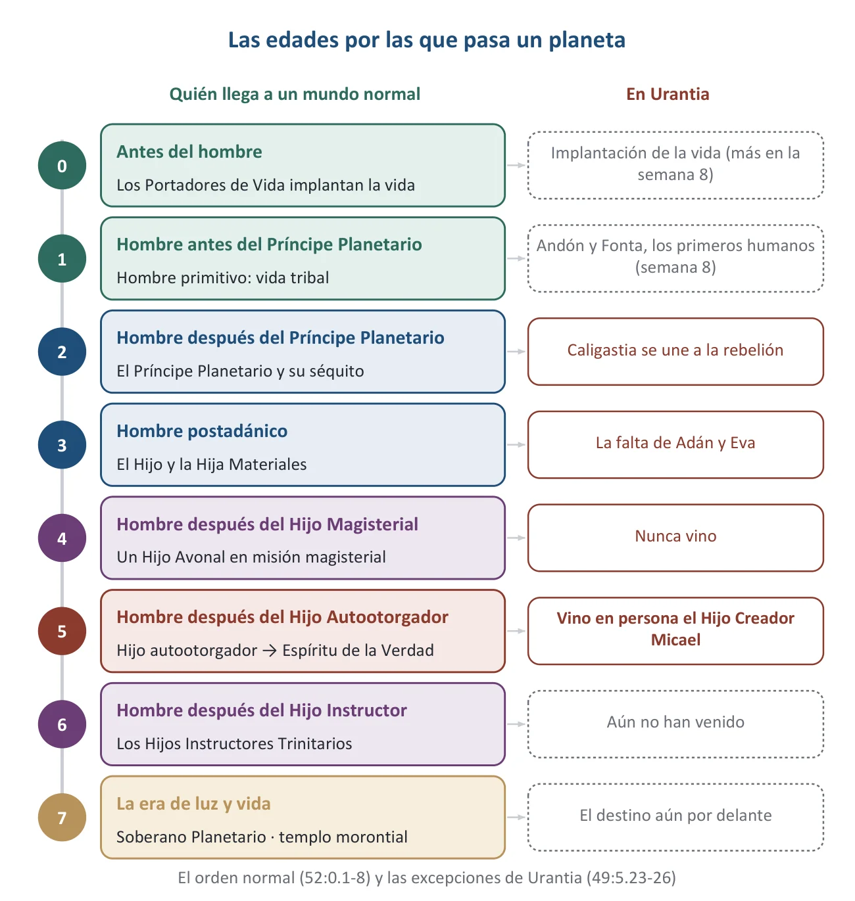
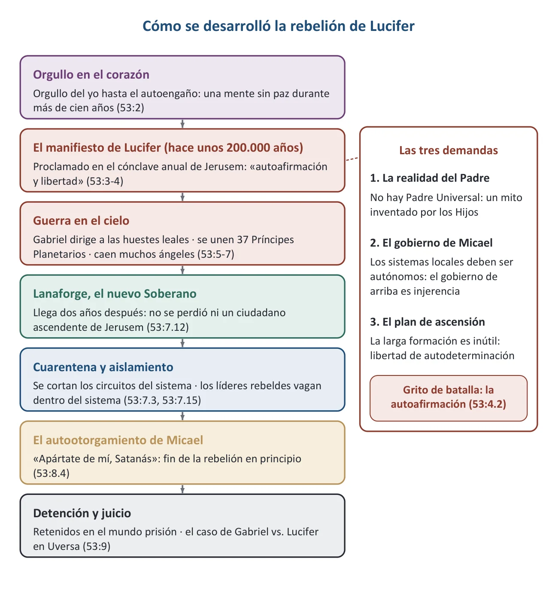
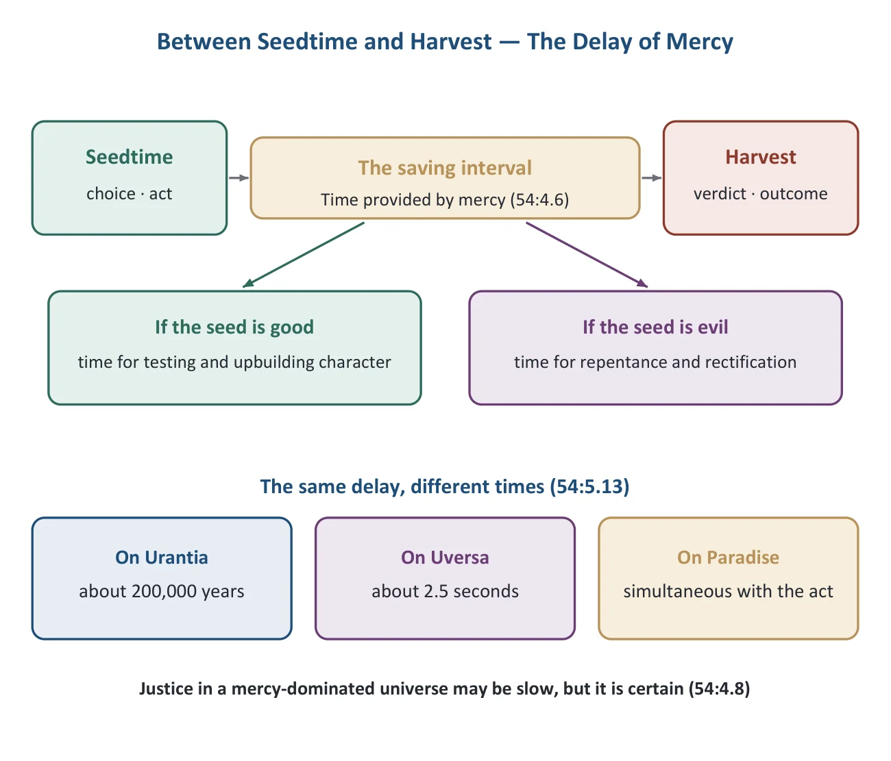

Las edades planetarias y la rebelión de Lucifer
Lectura: Documento 49 · Documento 52 · Documento 53 · Documento 54 · Documento 55 · Documento 56 (un primer vistazo)

El universo contiene muchísimos mundos donde vive gente. En un mundo normal los Hijos de Dios llegan uno tras otro, y el planeta avanza por una serie determinada de edades hacia la era de luz y vida. Pero hace unos doscientos mil años Lucifer, el soberano de nuestro sistema, levantó una rebelión en nombre de la «libertad», y Urantia quedó muy fuera de ese orden. Esta semana vemos en qué se diferencia la verdadera libertad de la falsa, por qué Dios no puso fin a la rebelión de inmediato y qué destino espera al final a todos los mundos.
Relato inicial
Un agricultor que siembra un campo no recoge la cosecha a la mañana siguiente. Mientras tanto, la cizaña crece junto con el trigo. Una mano impaciente quiere arar todo el campo de una vez, pero un agricultor sabio espera hasta la cosecha, porque arrancar demasiado pronto destruiría los buenos brotes junto con los malos.
Los documentos 49 a 55, que leemos esta semana, cuentan la historia de un campo tan amplio como el universo. La semilla de la vida se siembra en innumerables mundos, y en cada edad vienen obreros celestiales a cuidarla. En nuestro sistema, sin embargo, aquel a quien se confió el campo intentó hacerse su dueño. Esa fue la rebelión de Lucifer.
Es una historia oscura con un final luminoso. La misericordia oculta en la espera y la edad de luz y vida que todo mundo alcanza por fin son el punto de llegada de esta semana.
1. Los numerosos mundos habitados
El mundo número 606
En las semanas anteriores seguimos al alma hacia arriba después de la muerte, hasta los mundos de estancia y Jerusem, la capital del sistema. Ahora dirigimos la mirada hacia abajo, a los planetas donde vive la gente. El libro de Urantia llama a esos planetas mundos habitados, y nuestro sistema local, Satania, contiene bastantes.
Satania misma es un sistema no terminado que contiene tan sólo 619 mundos habitados. Estos planetas están numerados en forma de serie de acuerdo con su registro como mundos habitados, como mundos habitados por criaturas volitivas. Así pues Urantia ha recibido el número 606 de Satania, lo cual significa que es el mundo 606 de este sistema local en el cual el largo proceso de evolución de la vida culminó en la aparición de seres humanos.49:0.3
Nuestra tierra es uno de unos seiscientos mundos vecinos. No vivimos solos en el universo. Y en cada uno de esos mundos la aparición de los seres humanos no es un accidente.
El hombre mortal no es un accidente evolucionario. Existe un sistema preciso, una ley universal, que determina el desarrollo del plan de vida planetario en las esferas del espacio.49:1.6
Muchas clases de hijos, un solo Padre
Los pueblos de los mundos habitados son notablemente distintos. El documento 49 explica que los cuerpos están diseñados para su entorno: la atmósfera, la tierra, el agua y el aire, la gravedad y la temperatura. Hay incluso mundos cuyos habitantes no respiran. Sin embargo, hay algo que no cambia.
Existen grandes diferencias entre los mortales de los distintos mundos, aun entre aquellos que pertenecen a los mismos tipos intelectuales y físicos, pero todos los mortales de dignidad volitiva son animales erectos, bípedos.49:4.1
También el cerebro se presenta en tres diseños básicos. Este pasaje nos pone delante un espejo.
La única uniformidad física entre los mortales es el cerebro y el sistema nervioso; sin embargo, existen tres organizaciones básicas del mecanismo cerebral: los tipos con un cerebro, los de dos cerebros y los de tres cerebros. Los urantianos son del tipo de dos cerebros, un tanto más imaginativos, aventurosos, y filosóficos que los mortales de un solo cerebro pero un tanto menos espirituales, éticos y adoradores que los de las órdenes de tres cerebros.49:5.13
Curiosos y amantes de la aventura, pero poco ejercitados en la adoración: ese es el retrato que el libro hace de nosotros. Aun así, por mucho que difieran los cuerpos y los cerebros, el cuidado del cielo es el mismo para todos.
Todos los distintos tipos físicos y series planetarios de mortales disfrutan por igual del ministerio de los Ajustadores del Pensamiento, de los ángeles guardianes, y de las varias órdenes de las huestes mensajeras del Espíritu Infinito. Todos los mortales son liberados por igual de las cadenas de la carne por la emancipación de la muerte natural, y todos proceden por igual a los mundos morontiales de evolución espiritual y progreso mental.49:6.1
Los hijos pueden tener distinto aspecto, pero el Padre es uno. La variedad no es un defecto del universo; es su riqueza.
| Punto de comparación | Lo que varía de un mundo a otro | Lo que comparten todos los mundos |
|---|---|---|
| Cuerpo | Siete tipos físicos adaptados a la atmósfera, la gravedad y la temperatura | Seres erguidos que caminan sobre dos pies |
| Hábitat | Agua, aire, tierra o una mezcla de tierra y aire | Aparición por evolución |
| Cerebro | De un cerebro, de dos cerebros (Urantia), de tres cerebros | La mente como don del Espíritu Infinito |
| Cuidado del cielo | Cuándo llegan los Hijos | Ajustadores, ángeles guardianes, los mundos morontiales |
Palabras nuevas
- Mundo habitado: un planeta donde viven mortales dotados de voluntad. Urantia es el mundo habitado número 606 de Satania.
- Satania: el sistema local al que pertenece nuestro planeta, con Jerusem como capital. Un sistema aspira a tener unos mil mundos habitados.
- Soberano del Sistema: el Hijo que gobierna un sistema local. Hasta la rebelión, Lucifer era el Soberano del Sistema de Satania.
2. Las edades por las que pasa un planeta
El orden de las siete edades
Así como una escuela tiene sus grados, un planeta tiene sus edades. Después de que los Portadores de Vida implantan la vida y aparecen los seres humanos, los Hijos de Dios llegan en un orden fijo. Cada llegada abre una nueva edad, llamada dispensación.
DESDE el inicio de la vida en un planeta evolucionario hasta el momento de su florecimiento final en la era de luz y vida, aparecen en el escenario de la acción mundial por lo menos siete épocas de vida humana. Estas épocas sucesivas están determinadas por las misiones planetarias de los Hijos divinos, y en un mundo promedio habitado estas épocas aparecen en el siguiente orden: 1. El Hombre antes del Príncipe Planetario. 2. El Hombre después del Príncipe Planetario. 3. El Hombre Postadánico. 4. El Hombre después del Hijo Magisterial. 5. El Hombre después del Hijo Autootorgador. 6. El Hombre después del Hijo Instructor. 7. La Era de Luz y Vida.52:0.1-8
El Príncipe Planetario abre el camino a la civilización y a la sociedad, y Adán y Eva, el Hijo y la Hija Materiales, elevan la raza en cuerpo y mente. Luego les toca el turno a los Hijos del Paraíso.
Cuando el progreso intelectual y ético de una raza humana ha alcanzado los límites del desarrollo evolucionario, llega un Hijo Avonal del Paraíso en misión de magistrado; y más adelante, cuando el estado espiritual de dicho mundo se está acercando a su límite de logro natural, un Hijo autootorgador Paradisiaco viene al planeta. La misión principal del Hijo autootorgador consiste en establecer el estado planetario, liberar al Espíritu de la Verdad para la función planetaria, y de este modo efectuar la llegada universal de los Ajustadores del Pensamiento.49:5.25
Cuando el Hijo autootorgador termina su misión, el mundo llega a un gran punto de inflexión. Se derrama el espíritu del Hijo, y desde entonces el espíritu de Dios viene a morar en cada persona.
En ese momento el Avonal autootorgador y el Creador Micael envían su espíritu conjunto, el Espíritu de la Verdad, al mundo de autootorgamiento. … concomitantemente con esto se emite el edicto de otorgamiento de los Ajustadores del Pensamiento. De allí en adelante todas las criaturas volitivas de mente normal de ese mundo recibirán un Ajustador en cuanto lleguen a la edad de responsabilidad moral, de elección espiritual.52:5.6
El orden tiene sus razones. Cada Hijo construye sobre el terreno que preparó el anterior. Primero viene la elevación biológica, después el progreso ético y luego el despertar espiritual. El principio que vimos en la semana 1, que la revelación se da en medidas que la gente puede soportar, aquí da forma a toda la historia de un planeta.
La religión es totalmente un proceso evolucionario antes de la llegada del Príncipe Planetario. Posteriormente la religión progresa mediante revelaciones graduales así como también por crecimiento evolucionario. Cada dispensación, cada época mortal, recibe una presentación ampliada de la verdad espiritual y de la ética religiosa.52:2.3

Un planeta fuera de orden
Si comparamos este calendario normal con Urantia, casi todas las columnas están desajustadas. Caligastia, el Príncipe Planetario, se unió a la rebelión, y Adán y Eva no completaron su misión. La columna siguiente es aún más sorprendente.
Aquí, nuevamente, Urantia se desvía: no ha habido jamás una misión de magistrado en vuestro mundo, tampoco fue vuestro Hijo autootorgador de la orden de Avonales; vuestro planeta disfrutó el honor especial de tornarse en hogar planetario mortal del Hijo Soberano, Micael de Nebadon.49:5.26
Al más atribulado de los planetas vino en persona, como hombre, el Creador del universo. Sin embargo, su venida no trajo la paz a la tierra de inmediato.
El Hijo autootorgador es el Príncipe de la Paz. … Pero estas influencias saludables no acompañaron la llegada de vuestro Hijo de autootorgamiento, Cristo Micael. Urantia no procede en el orden normal. Vuestro mundo está fuera del ritmo de la procesión planetaria.52:6.1
Las guerras y divisiones de nuestro mundo son señales de que este planeta quedó gravemente herido muy temprano en su historia. Esa herida es el tema de la sección siguiente.
| Edad | Quién viene | Lo que trae la edad |
|---|---|---|
| 1 Antes del Príncipe Planetario | El cuidado de los Portadores de Vida | Aparece el hombre primitivo; vida tribal |
| 2 Después del Príncipe Planetario | El Príncipe Planetario y su séquito | La civilización, el hogar, la primera religión revelada |
| 3 Después de Adán | El Hijo y la Hija Materiales | Mejora racial, invención, internacionalismo |
| 4 Después del Hijo Magisterial | Un Hijo Avonal | Liberación económica, apogeo intelectual |
| 5 Después del Hijo autootorgador | El Hijo autootorgador | El Espíritu de la Verdad; Ajustadores para todos |
| 6 Después de los Hijos Instructores | Los Hijos Instructores Trinitarios | La lealtad espiritual se vuelve universal |
| 7 Luz y vida | La edad del Soberano Planetario | Paz establecida y crecimiento continuo |
Palabras nuevas
- Dispensación: un tramo de la historia planetaria que se abre cuando un Hijo de Dios llega a un mundo. Cada nueva llegada inicia una nueva dispensación.
- Hijo Magisterial: el Hijo del Paraíso, llamado también Avonal, cuyo nombre conocimos en la semana 4. Juzga las edades de un planeta y a veces viene en la carne en una misión de magistrado.
- Hijo autootorgador: un Hijo del Paraíso que se otorga a sí mismo a un mundo evolucionario. A Urantia vino en persona el Hijo Creador Micael.
Junto a la Biblia
Jesús dijo: «No penséis que he venido para meter paz en la tierra» (Mateo 10:34), y habló de antemano de «guerras y rumores de guerras» (Mateo 24:6). El documento 52 explica estos dichos por el hecho de que Urantia está fuera del ritmo del orden planetario normal (52:6.1). Vino el Príncipe de la Paz, pero la paz se demora, y El libro de Urantia busca la razón en la historia del planeta.
3. La rebelión de Lucifer: una declaración de falsa libertad
La caída de un Hijo brillante
Lucifer no era malo desde el principio. Era una de las personalidades sobresalientes entre los Hijos Lanonandek creados en el universo local.
LUCIFER era un brillante Hijo Lanonandek primario de Nebadon. Había servido en muchos sistemas, había sido un consejero elevado de su grupo, y se distinguía por su sabiduría, sagacidad y eficiencia. … Desde comienzos tan magníficos, a través del mal y del error, abrazó el pecado y ahora se lo numera como uno de los tres Soberanos del Sistema en Nebadon que sucumbieron al impulso del yo y se rindieron a los sofismas de la libertad personal espuria —el rechazo de la lealtad universal y el descuido de las obligaciones fraternales, la ceguera a las relaciones cósmicas.53:0.1
¿Cómo pudo caer un ser así? El documento 53 no busca la causa en circunstancias externas. Nada en Satania invitaba especialmente a la rebelión.
Es muy difícil señalar la causa o las causas exactas que finalmente culminaron en la rebelión de Lucifer. Tan sólo estamos seguros de una cosa, y eso es: sean cuales fueren estos comienzos, tuvieron origen en la mente de Lucifer. Debe haber existido una vanagloria del yo que se alimentó hasta el punto del autoengaño, de modo que Lucifer, durante un período, verdaderamente se convenció de que su idea rebelde realmente redundaría en el bien del sistema, si no del universo entero. … Durante mucho tiempo se le ofreció la oportunidad de arrepentirse, pero tan sólo algunos de sus subordinados aceptaron la misericordia ofrecida.53:2.5
La palabra en que hay que fijarse es «autoengaño». Al principio Lucifer creía que hacía lo correcto. El orgullo siempre marcha detrás de una causa plausible. Luego, en algún momento, había ido demasiado lejos para volver atrás.
Las tres demandas del manifiesto de Lucifer
La rebelión estalló hace unos doscientos mil años como una declaración pública en el cónclave anual de Jerusem.
Cualesquiera hayan sido los orígenes primeros de la desazón en los corazones de Lucifer y Satanás, la explosión final tomó la forma de la Declaración Luciferina de Libertad. La causa de los rebeldes se expresó bajo tres encabezamientos:53:3.1
La primera demanda se refería a Dios.
1. La realidad del Padre Universal. Lucifer alegaba que el Padre Universal en realidad no existía, que la gravedad física y la energía espacial eran inherentes al universo, y que el Padre era un mito inventado por los Hijos Paradisiacos con el objeto de retener el gobierno de los universos en el nombre del Padre.53:3.2
La segunda se refería al gobierno del universo.
2. El gobierno universal del Hijo Creador —Micael. Lucifer sostenía que los sistemas locales debían de ser autónomos. … Estaba dispuesto a reconocer a Micael como su Padre Creador, pero no como su Dios y gobernante legítimo.53:3.3
La tercera apuntaba directamente a nosotros, los mortales ascendentes.
3. El ataque contra el plan universal de capacitación de los mortales ascendentes. Lucifer sostenía que se gastaba demasiado tiempo y energía en el esquema de capacitar en forma tan completa a los mortales ascendentes sobre los principios de la administración del universo, principios que según él, eran poco éticos pero irracionales. … Advocó que los ascendenteros debían disfrutar de la libertad de autodeterminación individual.53:3.6
Dichas en una sola línea, las tres demandas afirman: no hay Padre, el gobierno desde arriba es una intromisión y la larga capacitación es un desperdicio. El lema que las unía era la autoaserción.
La autoaserción fue el grito de batalla de la rebelión de Lucifer.53:4.2
Gabriel no respondió con la fuerza. Solo anunció que todos los seres serían libres de elegir.
Gabriel estaba presente personalmente a lo largo de todos estos procedimientos desleales y tan sólo anunció que él, a su debido tiempo, hablaría por Micael, y que todos los seres tendrían libertad y no serían molestados en su elección; que el «gobierno de los Hijos en nombre del Padre tan sólo deseaba lealtad y devoción voluntarias, sinceras y a prueba de sofismas».53:4.6

La rebelión se extendió por todo el sistema. Los príncipes de treinta y siete planetas se pusieron del lado de Lucifer, y muchos ángeles se pasaron a su bando. Sin embargo, hubo un grupo que nunca vaciló.
Los mortales ascendentes eran vulnerables, pero resistieron a los sofismas de la rebelión mejor que los espíritus más bajos. … está registrado para gloria de la sabiduría del esquema de ascensión que ni uno solo de los integrantes de la ciudadanía ascendente de Satania residentes en Jerusem participó en la rebelión de Lucifer.53:7.10
Cuando Lanaforge, el nuevo Soberano del Sistema, llegó poco más de dos años después, esta fue la primera noticia que envió a la sede de la constelación.
«No se ha perdido un solo ciudadano de Jerusem. Todos los mortales ascendentes sobrevivieron la dura prueba y surgieron de la comprueba crucial triunfadores y victoriosos». Y este mensaje llegó a Salvington, Uversa y el Paraíso, transmitiendo la certidumbre de que la experiencia de sobrevivir en la ascensión mortal es la mayor protección contra la rebelión y la salvaguardia más segura contra el pecado.53:7.12
Quienes habían recibido precisamente la capacitación ascendente de la que Lucifer se burlaba como inútil fueron los que se mantuvieron más firmes. La verdad ganada por la experiencia es más fuerte que el sofisma deslumbrante.
La verdadera libertad y la falsa libertad
En la bandera de Lucifer estaba escrita la palabra «libertad». Por eso el documento 54 dice que la confusión más profunda que dejó la rebelión es la incapacidad de distinguir la verdadera libertad de la falsa.
La libertad verdadera es la búsqueda de las edades y la recompensa del progreso evolucionario. La libertad falsa es la decepción sutil del error del tiempo y del mal del espacio.54:1.2
Luego traza la línea que las separa.
La verdadera libertad es socia del genuino autorespeto; la falsa libertad es cónyuge de la autoadmiración. La verdadera libertad es el fruto del autocontrol; la falsa libertad, la suposición de la autoafirmación. El autocontrol lleva al servicio altruista; la autoadmiración tiende a la explotación de los demás para el engrandecimiento egoísta del individuo errado que está dispuesto a sacrificar el logro recto para tener poderío injusto sobre sus semejantes.54:1.6
La falsa libertad empieza con «el derecho a hacer lo que me plazca» y termina en dominar a los demás. La verdadera libertad empieza por gobernarse a sí mismo y da fruto en el servicio a los demás. Entonces, ¿cuál fue exactamente el error de Lucifer?
La locura de Lucifer fue tratar de hacer lo que no se puede hacer: saltarse el tiempo en un universo experiencial. … En breve, lo que Dios había dado a los hombres y a los ángeles Lucifer quería quitarles, o sea, el privilegio divino de participar en la creación de sus propios destinos y del destino de este sistema local de mundos habitados.54:2.3-4
«Saltarse el tiempo» significa omitir el proceso y apoderarse del resultado, como la corriente que salta en un cortocircuito. La ironía es que una rebelión que clamaba por la libertad intentó quitar a todos los seres la verdadera libertad de participar, mediante su propio crecimiento, en la construcción del universo. El documento 54 zanja la cuestión en una sola oración.
Ningún ser en todo el universo tiene la libertad justa de privar a otro ser de la verdadera libertad, el derecho de amar y ser amado, el privilegio de adorar a Dios y de servir a sus semejantes.54:2.5
| Punto de comparación | Verdadera libertad | Falsa libertad |
|---|---|---|
| Compañero | El genuino autorrespeto | La autoadmiración |
| Raíz | El fruto del autocontrol | La suposición de la autoafirmación |
| Fruto | Servicio altruista | Explotación de los demás, poder injusto |
| Tiempo | La recompensa de un largo progreso | Impaciencia por saltarse el proceso |
| Relación con la realidad | Respeta la justicia, la equidad y la fraternidad | Desligada de la realidad y del deber, se destruye a sí misma |
Palabras nuevas
- Hijo Lanonandek: la orden de Hijos del universo local que conocimos en la semana 5; de esta orden proceden los Soberanos de los Sistemas y los Príncipes Planetarios. Lucifer, Satanás y Caligastia eran todos Lanonandek.
- Manifiesto de Lucifer: la declaración de rebelión que Lucifer emitió en Jerusem, llamada también Declaración de Libertad. Atacaba la realidad del Padre, el gobierno de Micael y el plan de ascensión de los mortales.
- Gabriel: el jefe ejecutivo del universo local de Nebadon. Durante la rebelión dirigió a las huestes leales en nombre de Micael.
Junto a la Biblia
Isaías canta: «¡Cómo caíste del cielo, oh Lucero, hijo de la mañana!» (Isaías 14:12), y el Apocalipsis relata: «Y fué hecha una grande batalla en el cielo: Miguel y sus ángeles lidiaban contra el dragón» (Apocalipsis 12:7). El documento 53 relaciona estos versículos con la rebelión de Lucifer y explica que la «guerra en los cielos» no fue una batalla de espadas, sino una contienda entre la verdad y el sofisma en la que estaba en juego la vida eterna (53:5.6-7).
4. ¿Por qué no se la detuvo de inmediato? La demora de la misericordia
Un Padre que espera
Casi todos los que leen esta parte se hacen la misma pregunta: si Dios es todopoderoso, ¿por qué no puso fin a la rebelión el primer día? El autor del documento 54 no esquiva la pregunta. Empieza por evocar el corazón de un padre.
Los padres, aquellos que han engendrado y criado a hijos, son capaces de comprender mejor por qué Micael, un padre Creador, pueda ser lento en la condena y destrucción de sus propios Hijos. La historia del hijo pródigo que narrara Jesús ilustra muy bien de qué manera un padre amante puede esperar por mucho tiempo hasta que el hijo descarriado se arrepienta.54:4.2
A continuación muestra cómo la justicia y la misericordia obran juntas en el tiempo. Aquí regresa el agricultor de nuestro relato inicial.
La justicia suprema puede actuar instantáneamente cuando no está frenada por la misericordia divina. Pero el ministerio de la misericordia a los hijos del tiempo y el espacio siempre provee esta demora temporal, este intervalo de salvación entre la labranza y la cosecha. Si la semilla es buena, este intervalo provee la prueba y el fortalecimiento del carácter; si la semilla es mala, esta demora misericordiosa provee tiempo para el arrepentimiento y la rectificación. … Este refrenamiento de la justicia por la misericordia prueba que Dios es amor, y que este Dios de amor domina los universos y controla con misericordia el destino y juicio de todas sus criaturas.54:4.6

Razones de la demora
Primero hay que ver en qué situación se encontraba Micael en aquel momento. Aún no había completado su séptimo autootorgamiento, su vida en Urantia.
En el momento de esta rebelión y de las dos que la precedieron no existía una autoridad soberana absoluta y personal en el universo de Nebadon. Micael gobernaba por derecho divino, como vicegerente del Padre Universal, pero aún no por su propio derecho personal.53:5.2
La sección 5 del documento 54 da doce razones por las que no se sometió antes a los rebeldes. Las primeras dicen:
1. La misericordia requiere que cada malhechor tenga suficiente tiempo para formular una actitud deliberada y plenamente elegida respecto de sus pensamientos malignos y de sus acciones pecaminosas. 2. El amor de un Padre domina la justicia suprema; por lo tanto la justicia nunca destruirá lo que la misericordia pueda salvar. El tiempo para aceptar la salvación es concedido a todo malhechor. 3. Ningún padre afectuoso se apresura jamás en castigar a un miembro de su familia que comete un error. La paciencia no puede funcionar independientemente del tiempo.54:5.2-4
La espera no fue solo por los rebeldes. Innumerables seres que vacilaban al margen necesitaban tiempo para pensarlo bien y elegir. Si la rebelión se hubiera aplastado por la fuerza, las semillas de la duda habrían quedado enterradas en el suelo.
Para mantener abiertas las puertas de la ascensión al Paraíso a los seres de Norlatiadek, era necesario proveer el desarrollo pleno de la revolución y asegurar la determinación completa de la actitud por parte de todos los seres que tuvieran de alguna manera algo que ver con esto.54:5.10
Otra razón es que nuestro sentido del tiempo es estrecho.
El valor relativo del período de tiempo desde el punto de vista de Uversa, en donde la causa está pendiente, podría ilustrarse diciendo que el crimen de Lucifer fue llevado a tribunales dentro de dos segundos y medio de haberlo cometido. Desde el punto de vista del Paraíso, el juicio es simultáneo al acto.54:5.13
Para nosotros doscientos mil años parecen interminables, pero en los tribunales del superuniverso son un abrir y cerrar de ojos. El autor añade que en Uversa se enseñan cuarenta y ocho razones, y que probablemente hay otras tantas que no conocemos (54:5.14).
Unidos como una sola familia
Todavía queda una pregunta: ¿por qué han de compartir el costo los inocentes? El documento 54 responde con la imagen de una familia.
Si un padre afectuoso de una familia grande elige mostrar misericordia a uno de sus hijos culpable de graves maldades, es muy posible que la extensión de la misericordia a este hijo que se porta mal pueda dar como resultado dificultades temporales para todos los demás hijos de buena conducta. Estas contingencias son inevitables; este riesgo es inseparable de la situación real de tener un padre amante y de integrar un grupo familiar.54:6.3
Estar unidos como familia significa compartir tanto la alegría como el dolor. Pero ese dolor tiene un límite claro.
Pero debemos aclarar una cosa: … puedes estar seguro de la certidumbre eterna de que dichas tribulaciones son aflicciones transitorias. Ninguna de estas consecuencias relacionadas de la mala conducta en el grupo puede poner jamás en peligro tu futuro eterno ni privarte en lo más mínimo de tu derecho divino a la ascensión al Paraíso y al logro de Dios.54:6.4
La mala conducta ajena puede herir una vida, pero no puede quitarle a nadie su eternidad. Y la espera dio fruto.
Al principio, el sublevamiento de Lucifer pareció una calamidad sin mitigaciones para el sistema y para el universo. Gradualmente comenzaron a acumularse los beneficios. … Los Melquisedek enseñan ahora que lo bueno que resultó de la rebelión de Satania es más de mil veces la suma de todo lo malo.54:6.6
El fin de la rebelión y el don del aislamiento
¿Cuándo terminó la rebelión en principio? El documento 53 sitúa ese momento en la tentación en el desierto, cuando Jesús, el Hijo del Hombre, rechazó las propuestas de Lucifer.
Hubo supervivencia para los mortales y certidumbre para los ángeles, cuando vuestro Maestro, en respuesta a las propuestas de Lucifer, respondió calmadamente y con certidumbre divina, «Vete detrás de mí, Satanás». Ése fue, en principio, el fin verdadero de la rebelión de Lucifer.53:8.4
Después de la rebelión Urantia se convirtió en un mundo aislado, con sus circuitos hacia los demás mundos cortados. Incluso esta aparente desgracia esconde un don.
Pero el aislamiento de estas esferas ofrece a sus razas una oportunidad única para ejercer la fe y para desarrollar una calidad peculiar de confianza en la confiabilidad cósmica que no depende de la vista ni de otras consideraciones materiales. Es posible que resulte, finalmente, que las criaturas mortales que provienen de los mundos en cuarentena debido a la rebelión sean extremadamente afortunados.50:7.1
A los ascendentes como estos se les da un nombre especial.
En Jerusem los seres ascendentes de estos mundos aislados ocupan un sector residencial propio y se les conoce con el nombre de agondonters, lo cual significa criaturas volitivas evolucionarias que pueden creer sin ver, perseverar cuando están aisladas, y triunfar sobre dificultades insuperables aun cuando están a solas.50:7.2
No hay mejor escuela para aprender a creer sin ver. El documento 54 cierra la cuestión de la espera con pocas palabras.
La justicia en un universo dominado por la misericordia puede ser lenta, pero es certera.54:4.8
Palabras nuevas
- Cuarentena: la medida que aisló de los circuitos del universo a los planetas implicados en la rebelión. Urantia es uno de ellos.
- Agondonter: nombre que se da a los ascendentes de mundos aislados que creyeron sin ver y perseveraron solos.
- Gabriel contra Lucifer: la causa pendiente ante el tribunal del superuniverso en Uversa que trata del destino final de los jefes rebeldes.
Aclarar un malentendido
Un malentendido común: Dios creó el mal o, al menos, permitió la rebelión. Lo que dice El libro de Urantia: los Dioses no crean el mal ni permiten el pecado y la rebelión (54:0.2). Han dado el libre albedrío, y para que esa libertad sea real tiene que existir también la posibilidad de elegir mal (54:3.1). La misericordia simplemente da tiempo para que esas elecciones maduren; nunca aprueba el mal.
Aclarar un malentendido
Un malentendido común: el diablo se apodera de las personas y las obliga a pecar. Lo que dice El libro de Urantia: ningún espíritu caído tiene poder para invadir la mente de un hijo de Dios, y la fe es una armadura eficaz contra el pecado (53:8.8). Mucho de lo que se atribuye al diablo procede de tendencias humanas (53:8.9).
5. Luz y vida: el destino de un planeta
Adónde se dirige todo mundo
La historia de rebelión y confusión no termina en desesperación. El último capítulo de las siete edades es la promesa de que ningún mundo queda abandonado.
Sea cual fuere la historia natural especial de un planeta específico, sea que el reino haya sido totalmente leal, teñido de mal, o maldecido por el pecado —sean cuales fueren los antecedentes— tarde o temprano, la gracia de Dios y el ministerio de los ángeles inaugurarán el día del advenimiento de los Hijos Instructores Trinitarios; y su partida, después de su misión final, inaugurará esta maravillosa era de luz y vida.52:7.14
Ni siquiera un mundo «maldecido por el pecado» queda excluido. También Urantia llegará a esa edad, aunque sea tarde y por un camino más largo. El documento 55 no oculta las montañas que aún tenemos por delante.
La gran dificultad que enfrenta a Urantia en el asunto de lograr el elevado destino planetario de luz y vida corresponde a los problemas de enfermedad, degeneración, guerra, razas multicolores, y multilingüismo.55:3.21
Cómo es un mundo de luz y vida
En un mundo establecido en luz y vida, incluso la muerte cambia.
La muerte física natural no es una inevitabilidad mortal. La mayoría de los seres evolucionarios avanzados, ciudadanos de mundos que existen en la era final de luz y vida, no mueren; son trasladados directamente de la vida en la carne a la existencia morontial.55:2.1
Eso no convierte a ese mundo en un cielo sin defectos.
Durante esta edad de luz y vida el mundo goza de una prosperidad creciente bajo el gobierno paternal del Soberano Planetario. Para esta época los mundos progresan bajo el impulso de un solo idioma, una sola religión, y, en las esferas normales, una sola raza. Pero esta edad no es perfecta.55:3.1
Todavía hay hospitales, todavía ocurren accidentes y todavía hay un mal que se puede elegir o rechazar. El documento 55 advierte más de una vez que no se debe confundir un mundo así con el cielo.
Pero estos seres siguen siendo mortales; siguen respirando, comiendo, durmiendo y bebiendo. Esta gran evolución no es el cielo, pero es un sublime presagio de los mundos divinos de la ascensión al Paraíso.55:6.2
La luz y vida no es un final, sino el umbral de un viaje mayor. Desde el planeta, el establecimiento se amplía a través de siete etapas, al sistema, a la constelación, al universo local y más allá (55:0.4-11).

¿Cómo sería ver un mundo así aunque fuera una sola vez?
Si los mortales de la perturbada Urantia tan sólo pudieran visualizar uno de estos mundos más avanzados largamente establecido en luz y vida, jamás volverían a dudar de la sabiduría del esquema evolucionario de creación. Aunque no existiese un futuro de progresión eterna para la criatura, aun entonces los soberbios logros evolucionarios de las razas mortales en dichos mundos establecidos de logro perfeccionado justificarían ampliamente la creación del hombre en los mundos del tiempo y del espacio.55:6.9
Una historia que se reúne en la unidad
El documento 56, el último de la segunda parte, enlaza toda esta variedad y todos estos giros. Los numerosos mundos, las siete edades, la rebelión y la recuperación se convierten en una sola historia en el único Dios. El documento 56 da nombre al punto culminante de esa historia con la palabra belleza.
La belleza suprema, la cumbre del arte finito, es el drama de la unificación de la vastedad de los extremos cósmicos de Creador y criatura. El hombre en vías de encontrar a Dios y Dios en vías de encontrar al hombre —la criatura que se vuelve perfecta como su Creador— ése es el logro excelso de lo supremamente bello, el logro de la cúspide del arte cósmico.56:10.3
El agricultor espera porque confía en el día de la cosecha. La sinuosa historia de nuestro planeta también avanza hacia esa cosecha. A partir de la semana próxima entramos en la tercera parte y seguimos desde el principio la historia de este mismo planeta, Urantia.
Puntos clave de la semana
- Satania tiene 619 mundos habitados, y Urantia es el número 606. Los cuerpos y los cerebros difieren de un mundo a otro, pero el cuidado del cielo es el mismo.
- Un mundo normal pasa por siete edades a medida que llegan por turno el Príncipe Planetario, Adán y Eva, un Hijo Magisterial, un Hijo autootorgador y los Hijos Instructores.
- Urantia quedó fuera de orden por la rebelión del Príncipe Planetario y el incumplimiento de Adán, pero fue honrada con la venida en persona del Creador Micael como hombre.
- La rebelión de Lucifer nació de un orgullo que llegó al autoengaño, y negó la realidad del Padre, el gobierno de Micael y el plan de ascensión.
- La verdadera libertad es el fruto del autocontrol y lleva al servicio; la falsa libertad parte de la autoafirmación y explota a los demás.
- La rebelión no se terminó de inmediato porque la misericordia da a todos los seres tiempo para elegir, y sus penalidades no pueden quitarle a nadie su futuro eterno.
- Todo mundo alcanza al final la luz y vida, y eso no es un final, sino el umbral de un ascenso mayor.
Preguntas para reflexionar
- Medido con 54:1.6, ¿lo que hoy llamas «libertad» es el fruto del autocontrol o la suposición de la autoafirmación?
- ¿Cómo ilumina la idea de que la espera es misericordia (54:4.6) tu manera de afrontar los cambios lentos en tu propia vida o las faltas de los demás?
- ¿Por qué creer sin ver en un planeta aislado (50:7.2) podría ser una oportunidad y no una desgracia?
Lectura para la próxima semana
- Documentos 57–67 — El alba del planeta, la mañana de la humanidad: el nacimiento de Urantia y los comienzos de la vida, los primeros seres humanos y la edad del Príncipe Planetario